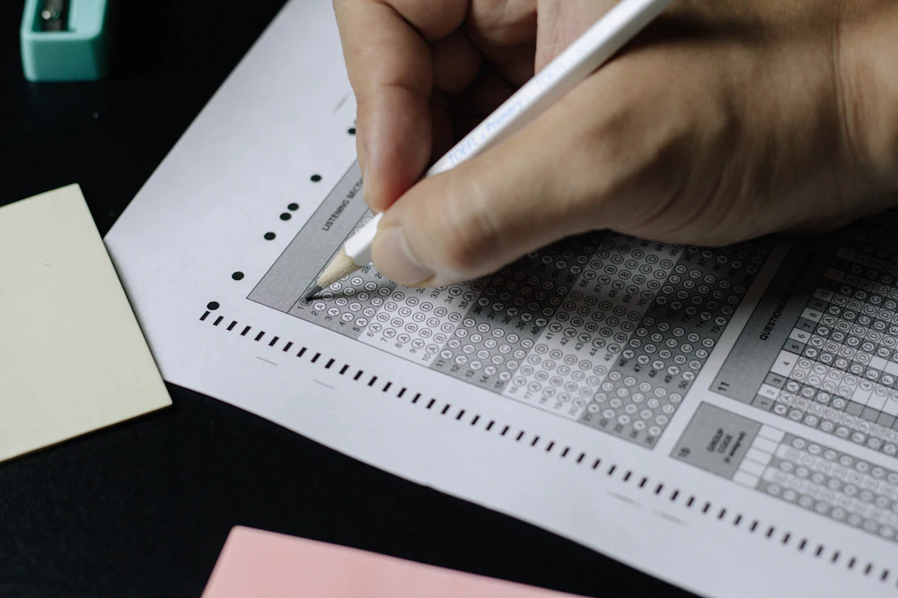

Как наистина се чувстват децата в училище
Оценките показват какво знаят децата, но не и дали спят достатъчно, дали ги боли глава преди час, дали ги е страх. Вашите отговори превръщат това в данни, които училището и инспекторатът не могат да пренебрегнат.
Какво измерваме
Факти от последния месец, а не впечатления
Питаме за конкретни неща, които се случват или не се случват. Отговорите се сравняват с норми за възрастта и със средното за страната.
Сън и натоварване
Часове сън в учебно време и във ваканция, време за домашни, свободно време.
Благополучие
Утвърденият индекс WHO-5, главоболие и болки в корема, тревожност преди училище.
Безопасност
Тормоз между деца, сигурност в училище и дали има към кого да се обърне детето.
Вредни практики
Викане, заплахи с оценка, колективни наказания, отстраняване от час, физическа сила.
Преподаване и подкрепа
Ясни ли са часовете, по силите ли са задачите, помагат ли учителите.
Методология
Измерване, на което може да се разчита
- Утвърдени въпросници. Индекс на благополучие на СЗО (WHO-5) и въпроси от международното изследване HBSC за здравето на учениците.
- Едно и също дете – в учебно време и във ваканция. Така се вижда какво идва от училището, а не от семейството или възрастта.
- Интервал на несигурност за всеки резултат. Малките разлики не се представят като големи.
- Сигнал само при значимо отклонение от средното за страната и при поне 10 отговора.
Как работи
От отговора до обобщения резултат
- Получавате кодУчилището раздава листчета с кодове. Можете да попълните и без код – като изберете училището и класа.
- Попълвате анонимноОт телефон или компютър, за около 6 минути. Допълнителни въпроси има само ако нещо не е наред.
- Резултатите се обобщаватЗа класа, училището, региона и страната, при поне 5 отговора и с интервал на несигурност.
- Сигнал към инспекторатаКогато вредна практика се среща значително по-често от средното, РУО получава сигнал с доказателствата.

Поверителност
Анонимно по начина, по който е направена
- Не питаме за имена, имейли, телефони. Кодът показва само класа и дали попълва родител или ученик.
- Свободният текст се почиства от имена и телефони още при изпращането.
- Публично излизат само обобщени резултати за училища и региони. Резултатите за класове и учители се виждат само с ключ за достъп.
- Сайтът не зарежда нищо от външни услуги – без реклами, без проследяване.
За кого
Една анкета, четири гледни точки
Родители
За всяко дете поотделно, от 1. до 12. клас. Въпросите са за това, което детето разказва и което виждате у дома.
Към анкетата →Ученици
От 4. клас нагоре, с по-кратък и по-прост вариант за най-малките. Никой не вижда отговорите ти.
Към анкетата →Училища
Директорът вижда резултатите по класове и сравнение със страната, за да знае къде да се намеси.
Резултати →Инспекторат (РУО)
Сигнали за проверка в региона, с доказателствата и печатен доклад. Сигналът е повод за проверка, не присъда.
Сигнали →Ако на детето му е тежко сега
Националната телефонна линия за деца е безплатна, денонощна и анонимна.